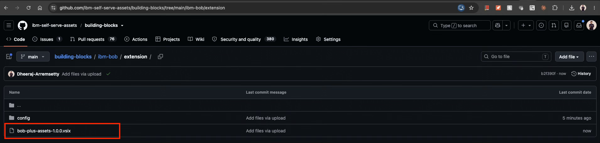
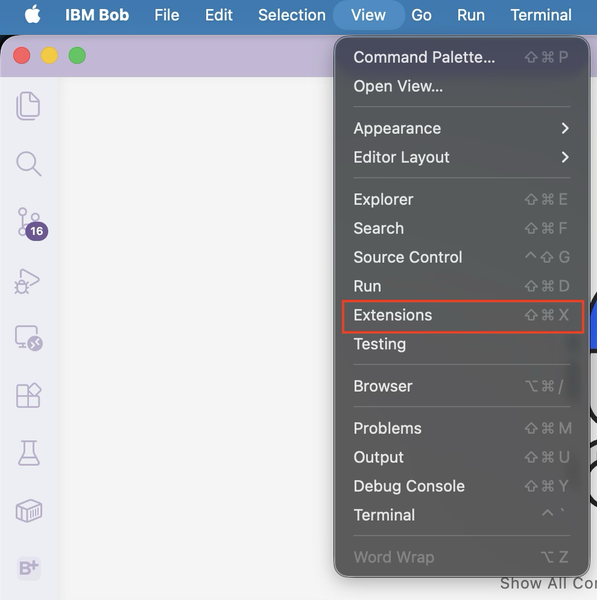
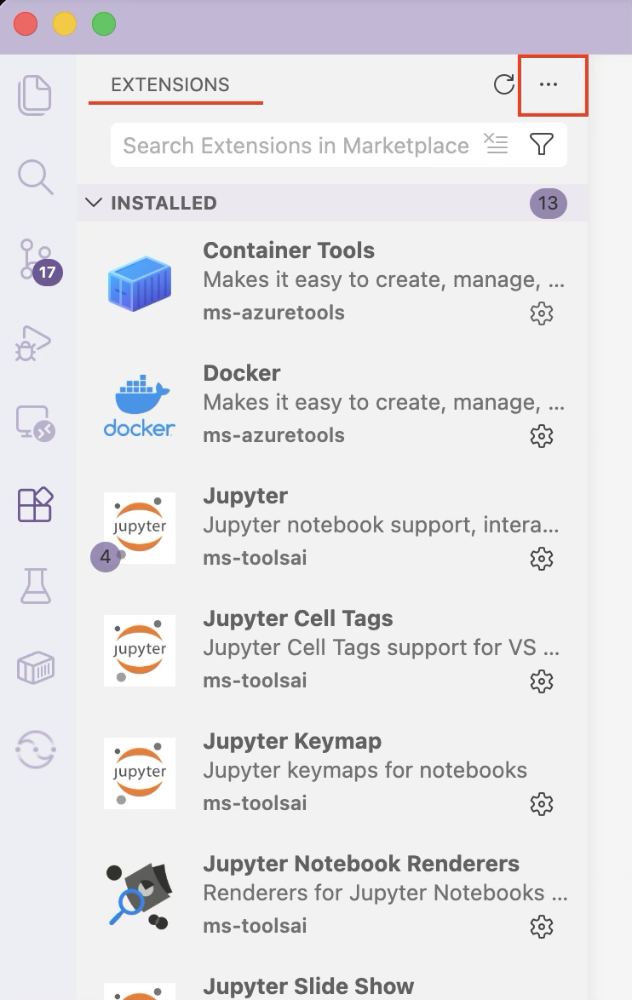
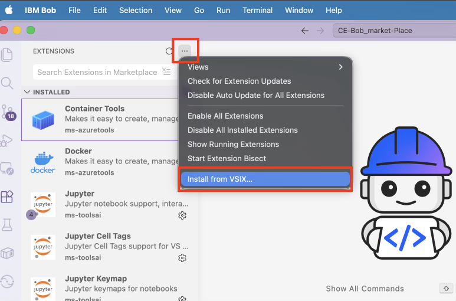
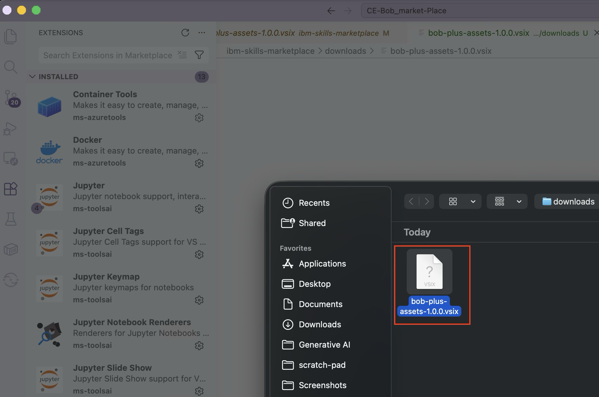
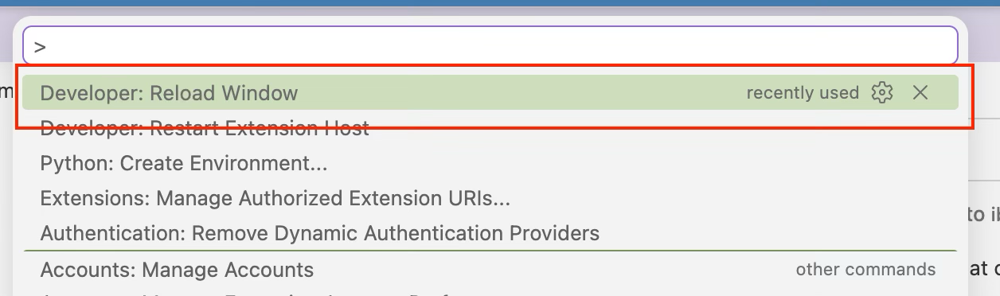
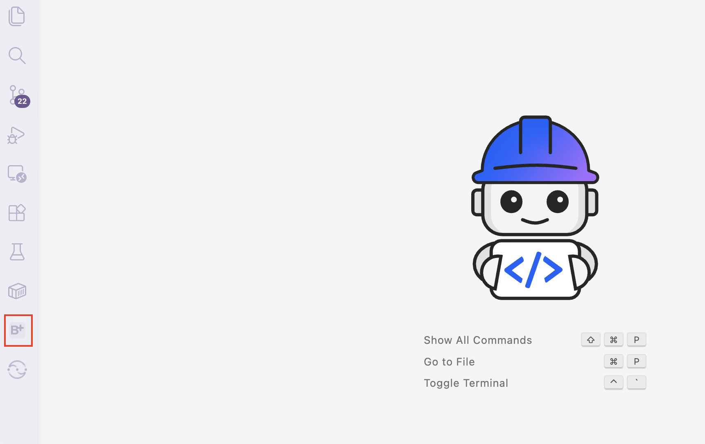
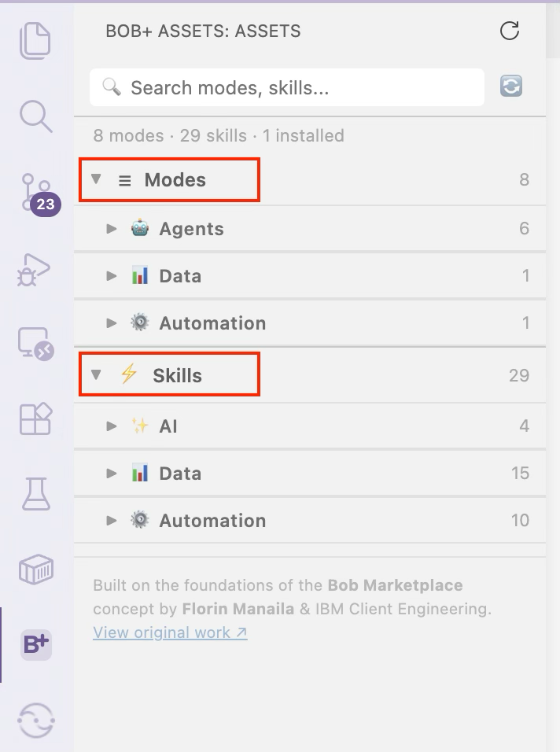
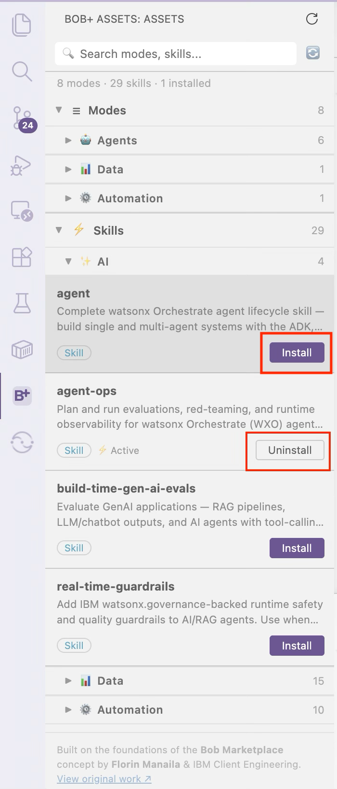

Installing the Bob+ Extension¶
The Bob+ extension brings the Building Blocks Marketplace directly into IBM Bob — letting you browse, install, and manage curated Skills and Modes without leaving your IDE.
Before you begin
Make sure you have a project folder open in IBM Bob before installing assets from the Marketplace.
What's Covered¶
| Step | What You'll Do |
|---|---|
| Step 1 — Download the VSIX | Get the extension package from GitHub |
| Step 2 — Install in IBM Bob | Install the .vsix via the Extensions panel |
| Step 3 — Open Bob+ | Access the Marketplace from the Activity Bar |
| Step 4 — Install Skills and Modes | Browse and install assets into your workspace |
Step 1 — Download the VSIX¶
- Go to the building-blocks extension page on GitHub.
- Download the latest
.vsixfile listed under Assets (e.g.bob-plus-assets-1.0.0.vsix). - Save the file locally — you will use it in Step 2.

Step 2 — Install in IBM Bob¶
- Open IBM Bob.
-
Open the Extensions panel using either option:
- Click the Extensions icon in the Activity Bar, or press
Cmd+Shift+X(Mac) /Ctrl+Shift+X(Windows/Linux) - Go to View → Extensions from the menu bar


- Click the Extensions icon in the Activity Bar, or press
-
Click the three-dots menu (
···) in the top right of the Extensions panel. -
Select Install from VSIX…

-
Choose the downloaded
.vsixfile and click Open.
-
Reload the window when prompted:
- Click Reload if a notification appears, or
- Press
Cmd+Shift+P(Mac) /Ctrl+Shift+P(Windows/Linux), type Developer: Reload Window, and pressEnter

You only need to install the extension once.
Step 3 — Open Bob+¶
-
Click the B+ icon in the Activity Bar on the left.

-
Bob+ opens showing Modes and Skills, grouped by domain.

-
Browse the items and click Install on anything you want to use — see Step 4 below.
No GitHub token required — uses the public GitHub API.
Step 4 — Install Skills and Modes¶
- Click Install on any Mode or Skill card.
- A progress notification shows download status.
- Skills land in
.bob/skills/and modes merge into.bob/custom_modes.yaml.

All assets are installed into your current workspace .bob/ folder. To remove an asset, click the Uninstall button on its card.
Next Steps¶
You're all set — start building with the Building Blocks Marketplace for IBM Bob+.
Use the search bar in Bob+ to find Skills and Modes by name or domain.
- Browse available assets on the Skills page
- Explore Bob Modes to tailor Bob's behaviour for your domain
Updating the Extension¶
When a new version is released:
- Download the new
.vsixfrom the building-blocks extension page. - Repeat Step 2 — install the new
.vsixover the existing one. - Reload the window when prompted.
Your installed Skills and Modes in .bob/ are not affected by extension updates.